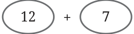
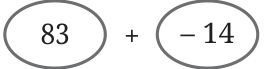
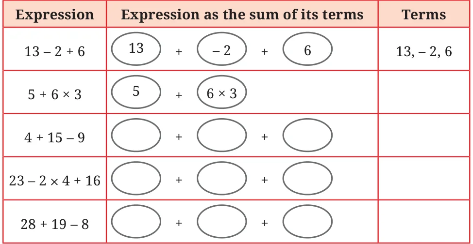

Suppose we have the expression \(30 + 5 \times 4\) without any brackets. Does it have no meaning?
When there are expressions having multiple operations, and the order of operations is not specified by the brackets, we use the notion of terms to determine the order.
Terms are the parts of an expression separated by a ‘+’ sign. For example, in \(12+7\), the terms are 12 and 7, as marked below.
\(12 + 7 =\)

We will keep marking each term of an expression as above. Note that this way of marking the terms is not a usual practice. This will be done until you become familiar with this concept. Now, what are the terms in \(83 - 14\)? We know that subtracting a number is the same as adding the inverse of the number. Recall that the inverse of a given number has the sign opposite to it. For example, the inverse of 14 is \(- 14\), and the inverse of \(- 14\) is 14. Thus, subtracting 14 from 83 is the same as adding \(- 14\) to 83. That is,
\(83 - 14 =\)

Thus, the terms of the expression \(83 - 14\) are 83 and \(-14\).
Check if replacing subtraction by addition in this way does not change the value of the expression, by taking different examples.
Can you explain why subtracting a number is the same as adding its inverse, using the Token Model of integers that we saw in the Class 6 textbook of mathematics?
All subtractions in an expression are converted to additions in this manner to identify the terms. Here are some more examples of expressions and their terms:
\(-18 - 3 = \boxed{-18} + \boxed{-3}\)
\(6 \times 5 + 3 = \boxed{6 \times 5} + \boxed{3}\)
\(2 - 10 + 4 \times 6 = \boxed{2} + \boxed{-10} + \boxed{4 \times 6}\)
Note that \(6 \times 5\), \(4 \times 6\) are single terms as they do not have any ‘+’ sign.
In the following table, some expressions are given. Complete the table.

Now we will see how terms are used to determine the order of operations to find the value of an expression. We will start with expressions having only additions (with all the subtractions suitably converted into additions).
Does changing the order in which the terms are added give different values?